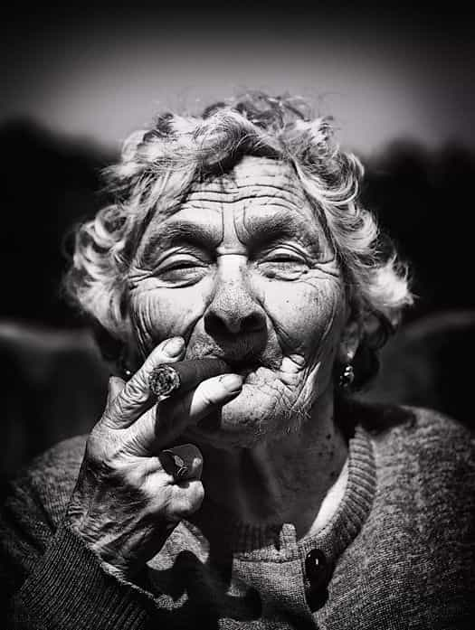

Women coming from more traditional societies, such as in Eastern Europe, Southeast Asia, and the Caribbean, are often being compared by mostly Western authors to their US, UK, and Western European counterparts. Their femininity, obedience, care, and support are hugely praised. As somebody that has grown up in Eastern Europe (Bulgaria) and spent the larger part of the last five years in the Southern Pacific (the Philippines), I have been surrounded by such women basically my whole life, but there are some downsides to dating this type of woman.
1. Traditional women are very dependent
It’s a fact that a lot of the girls from poorer countries have less resources than men and if they want to have a better life, they need somebody who can provide them with more resources. This is among the main reasons why Western men have tremendous success out of their home countries—their potential for resource extraction is immediately being recognized.
Let’s not pretend however that the male role of a “provider” has only upsides. Usually those girls will remain dependent on you throughout your relations. If you are just dating casually, you won’t get to feel it hard, because you just pay for a few drinks and meals here and there, but if you consider getting into a relationship, know that it will be up to you to provide till the bitter end (or probably forever, depending on marriage laws).
Lots of traditional women are street-smart and can learn quickly, but they usually didn’t spend the time and money to pursue fancy degrees, which could make them into the dreaded strong and independent career woman. If you can shoulder the bill and carry another person on your back (apart from any prodigies you may end up having together), then all should be good.
If you can barely afford to have a good life on your own, when you start “providing” chances are you will find yourself in the predicament of a reduced standard of living. I know that many guys get excited by the thought that their woman’s existence is dependent on the money they bring home, and this may not be a concern for you if you are loaded, but it is definitely a commonly overlooked factor worth considering before committing to anything long term.
2. They are extremely good at long game
My impression from reading about Western women is that the hardest part is establishing a meaningful relationship with them. This comes very natural to traditional girls, as traditional societies are still largely focused around family life and don’t cater very well to singles. Hence, chances are that by the time you meet one, she has already been in at least 2-3 long-term relationships before. While guys in the traditional countries may vary between very weak and extremely macho and dominant, the women are almost always naturally gifted at tying you down.
Observing traditional girls playing the long game is quite the masterpiece because you rarely get what’s going on, if and when it’s happening to you. Some men may consider this an asset and I’m definitely not one to hold it against women for their ability to initiate, build, and sustain long-term relationships, which can lead to starting a family together. Before you know it though, you’ll find their over-consuming presence in all areas of your life and unless you are equally gifted at long-game and sticking for your own goals, she will have carefully navigated you towards a path that best suits her interests but not necessarily yours.
Most men I have observed, regardless if having had affairs with hundreds of women or marrying their high-school sweetheart, usually react very similarly in such context: they play along up until they feel the benefits of the relationship outweigh the negatives and if this stops to be the case, they find themselves in a situation where it’s equally difficult to restore the balance and gain back control, as it is to change or leave their partner.
Decades ago, when family traditions were at their peak, a couple would eventually hit that unbalanced state after many years if not decades. Nowadays, thanks to the internet and freedom of movement, this moment happens much faster in a relationship, usually before the birth of a child, while the temptation to choose a path different than family life are always at an arm’s length.
In short, Western women may suck at building relationships and traditional women may be extremely skilled at it, but unless you are able to time their presence in your life with your own priorities and purpose, in the long run you would eventually feel equally discontent in both cases, albeit for slightly different reasons.
3. They don’t age well

Women in Eastern European and Southeast Asian countries seem to have two states of physical appearance: quite feminine and attractive up until certain age and then almost immediately and automatically they turn into near-granny material (late 30’s – early 40’s). Some would argue that this applies to women in general, but I think that poor living conditions, lower access to healthcare, higher alcohol consumption and less money for plastic surgeries and expensive cosmetics are factors that make the transition more notable and sudden than among Western women.
The traditional society also plays quite a big role here, where women say it’s “inappropriate” for somebody at their age to go to gym, dress elegantly or go out in bars and clubs, something women in the West still frequently do deep into their 40’s.
All in all, my main point as someone who has (almost) exclusively dated and mated with traditional women is that even though they seem like an overall better deal than their Westernized counterparts, they also come with their own set of fine print that you must understand and accept before opting for a long-term relationship.
Read Next: A Traditional Sex Role Success Story